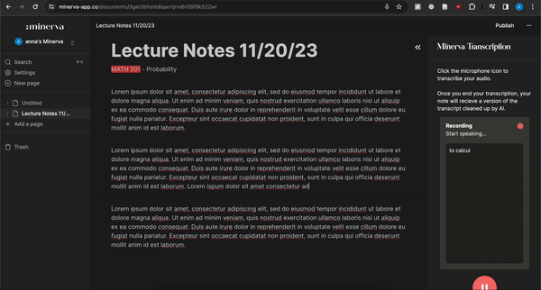
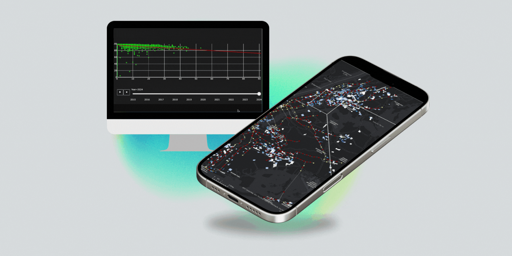

Project Showcase

Note-taking Platform for the Hard of Hearing
Minerva is a note-taking platform aimed at empowering individuals with hearing disabilities. Over 30 million people in the United States have some form of hearing loss, with 35% of them being adults between 65 and 75 years old. To ensure the product is accessible to all, we have adhered to a minimalist design and made it user-friendly.

Elevators and Economic Injustice using MTA's OpenData
Developed linear regression analysis on elevators/escalators outages with a team of 3 people. Used Python and Jupyter Notebook Identified 15 stations with need for new installations based on poverty, outages, and ridership to maximize accessibility by 4%